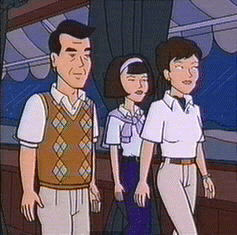

From left: Angier, Elsie and Katherine
The Sloanes are one of the wealthiest and most promiment families in Lawndale, a fact that causes envy in some (Jake and Helen Morgendorffer) and discomfort in others (Daria and, to some extent, Tom). Their first appearance was in "Is It Fall Yet?"
Angier is one of the partners in Grace, Sloane & Page, which is apparently some kind of investment firm (Jake jokes about "insider trading" when meeting Tom in "Is It Fall Yet?"). He's friends with Andrew Landon, who himself is no slouch in the success department (he invented the folding coffee cup, which he mentions in "Gifted" (#208)). Angier also appeared in "Boxing Daria" (#513) in a non-speaking role.
Katherine ("Kay") is on the board of the Lawndale Art Museum, and appears to be responsible for organizing the museum's fundraising events. She genuinely likes Daria, and doesn't seem to mind that she goes to a public high school instead of Tom's preparatory academy. Katherine also appeared in "Is It College Yet?" when she drove Tom and Daria to their visits to Bromwell University and Raft College.
Elsie is Tom's cynical and sarcastic sister. Like Tom, she apparently doesn't care much for her family's forays into "the land of the Muffys" (as Jane puts it), but unlike Tom, she's more outspoken about it.
An unnamed uncle was also seen in "Boxing Daria" (#513) during the family's trip to "the cove." In the scene where Tom is talking to Daria on the phone, he can be seen in the background playing chess with Angier.
|